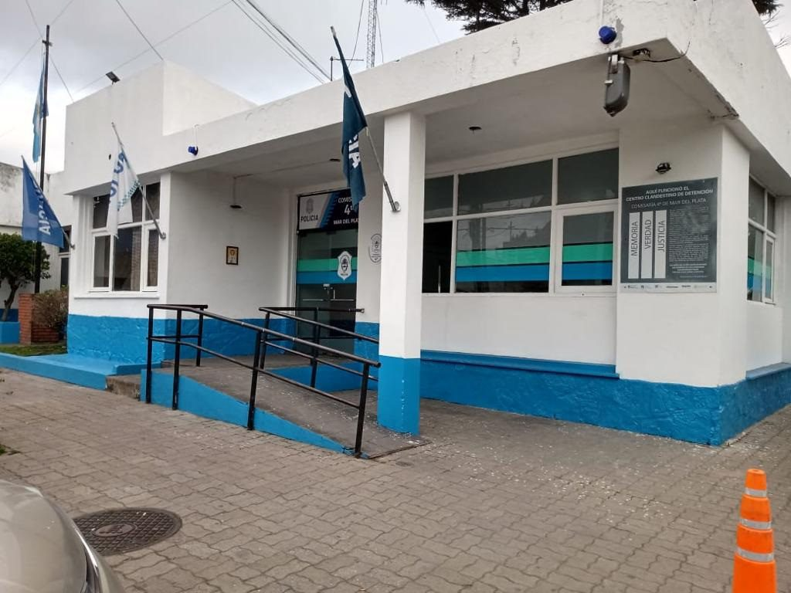
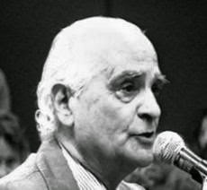

Los centros clandestinos de detención (CCD)
fueron instalaciones secretas donde las fuerzas de seguridad
detuvieron ilegalmente a miles de personas durante la
dictadura. Aquí, los detenidos eran sometidos a tortura y
muchos fueron asesinados.
Antes de profundizar en los centros de detención, es fundamental comprender qué fue la dictadura cívico-militar en Argentina.
La dictadura cívico-militar en Argentina fue un periodo que se desarrolló entre 1976 y 1983, durante el cual los militares tomaron el control del país. Este gobierno suspendió muchos derechos y libertades, persiguiendo a quienes se oponían a su régimen. Se utilizó la censura y la represión para mantener el control y eliminar la disidencia.
Los centros clandestinos de detención eran lugares secretos utilizados por el gobierno militar para detener, interrogar y torturar a las personas que consideraban enemigas. Estos centros no eran reconocidos oficialmente, por lo que las personas detenidas en ellos eran consideradas desaparecidas, ya que sus familias no sabían dónde estaban ni qué les había pasado. Estos centros eran una parte clave del sistema represivo del gobierno militar.
|
Además, como estos lugares no eran reconocidos por la ley, hasta hoy en día hay poca información disponible sobre ellos. Esto hace muy difícil encontrar a las personas desaparecidas y asegurarse de que los responsables sean castigados por sus acciones ilegales.
En esta comisaría de la Policía de la Provincia de Buenos Aires, Mar del Plata, funcionó un lugar de detención ilegal entre 1975 y finales de 1978, durante la última dictadura cívico-militar (1976-1983). Según testimonios de sobrevivientes, aquí se detuvo ilegalmente a cientos de personas. Los operativos de secuestro estaban a cargo de grupos de tareas integrados por miembros de las fuerzas armadas y de seguridad, además de civiles pertenecientes a las organizaciones paraestatales Concentración Nacional Universitaria (CNU) y Comando de Organización (CDO). Las víctimas coinciden en señalar la activa colaboración con la represión ilegal que prestaron miembros del Poder Judicial, quienes frecuentaban este lugar de detención clandestino.
Aunque hoy en dia no tenemos informacion de todos los desaparecidos, tenemos una lista de 52 personas que pasaron por este centro clandestino.
Los nombres estan en formato de link, entrando a ellos se puede ver el estado de la persona (liberada o desaparecida), un breve relato de lo que pasaron y tambien los centros clandestinos por los que estuvieron
Perteneció al Grupo de Artillería de Defensa Aérea de Mar del Plata, Buenos Aires y fue jefe de la subzona 15 desde febrero de 1976 hasta el 15 de diciembre de 1977, y como tal fue responsable de los campos de concentración ubicados en Mar del Plata, que funcionaban en la base aérea, la base naval, la comisaría 4º, el destacamento Batán y la escuela de suboficiales de infantería de mar.
En septiembre de 1983 fue llamado a declarar en el marco de la causa sobre Ana Rosa Frigerio, cuyo cadáver considerado NN, fue descubierto en el cementerio marplatense en abril de 1987. Es por esto que se le impuso la prisión preventiva rigurosa por homicidio reiterado en las personas de Ana Lía Delfina Magliaro, secuestrada en 1976 y asesinada, y del doctor Jorge Candeloro, secuestrado en junio de 1977 y muerto en circunstancias que el propio Barda reconoció ante el tribunal.
|
En total fue procesado por diez delitos cometidos como jefe de la subzona 15. No se benefició con la ley de obediencia debida pero la Corte Suprema de Justicia lo desprocesó en el fallo del 21 de junio de 1988 por la aplicación de la ley de Punto Final. Fue indultado por el Presidente Menem, causa 2.429: "Molina, Rafael Adolfo s/secuestro y privación ilegal de la la libertad" y de la causa "Patricia Emilia Lazzerie s/privación ilegal de la libertad y desaparición"
El decir "Nunca Más" se convirtió en una regla fundamental para la sociedad argentina, simbolizando el deseo de no volver a la oscura época de la dictadura. Esta consigna, que ha permanecido intacta e indiscutida, es convocada constantemente por personas de renombre en Argentina y en el mundo.
El veredicto del juicio a las juntas militares encontró culpables a cinco acusados: Videla y Massera recibieron cadena perpetua, Viola 17 años de cárcel, Lambruschini 8 años y Agosti 4 años y 6 meses. Las palabras del fiscal Strassera dieron al "Nunca Más" un peso significativo en el ámbito público, manteniéndose como una consigna vigente, especialmente cada 24 de marzo en Argentina.